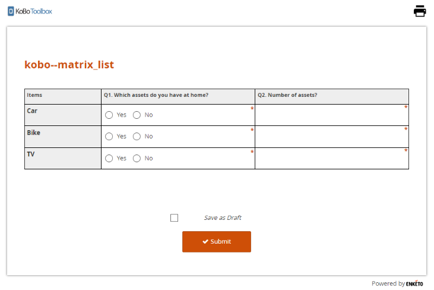

Search the knowledge base, browse our resources, and visit our forum for more detailed information
Last updated: 18 Jun 2025
Cascading select questions are sets of questions whose options depend on the response to a previous question. For example, your form may first ask the region where a respondent is from, and then in the next question list only the towns and villages of that region.
Adding sets of cascading select questions to your form can be done by importing them to a draft form in the formbuilder or adding them manually to an XLS Form and then uploading that file.
Open Excel or another spreadsheet program and follow this template as an example to create your template of questions and responses to be added.

Select and copy the whole cascading table template, then paste it into the Import Cascade, then click Done to import it. (If there were any mistakes in the formatting you will not be able to import the set - correct any formatting mistakes and make sure you followed the template instructions.)

You can move the imported questions anywhere in your form and change the labels of both the question and responses and delete responses.
If you want to add additional responses to the cascading list just delete the imported questions and import a new list from your spreadsheet.
You can preview the form to test the cascading questions.

(If you have an existing form, download it as XLS to your computer and open it in Excel or another spreadsheet program).
In the survey sheet, add new lines for the questions you’d like to add, following this template.
survey
type |
name |
label |
choice_filter |
|---|---|---|---|
select_one states |
Q1 |
Which state? |
|
select_one counties |
Q2 |
Which county? |
state=${Q1} |
select_one cities |
Q3 |
Which city? |
state=${Q1} and county=${Q2} |
survey |
In the same survey sheet, add a column called choice_filter and add the
XLSForm reference to each of the parent items.
In the choices sheet of the file, add all the options you would like to appear in the different questions, e.g. the lists of states, counties, and cities (follow the above template).
choices
list_name |
name |
label |
state |
county |
|---|---|---|---|---|
states |
texas |
Texas |
||
states |
washington |
Washington |
||
counties |
king |
King |
washington |
|
counties |
pierce |
Pierce |
washington |
|
counties |
king |
King |
texas |
|
counties |
cameron |
Cameron |
texas |
|
cities |
dumont |
Dumont |
texas |
king |
cities |
finney |
Finney |
texas |
king |
cities |
brownsville |
Brownsville |
texas |
cameron |
cities |
harlingen |
Harlingen |
texas |
cameron |
cities |
seattle |
Seattle |
washington |
king |
cities |
redmond |
Redmond |
washington |
king |
cities |
tacoma |
Tacoma |
washington |
pierce |
cities |
puyallup |
Puyallup |
washington |
pierce |
choices |
Note that for each of the child elements you need to add a column to specify its parent. For example, King and Pierce counties are in Washington state, so you need to write ‘washington’ into the ‘state’ column for these two counties.
Save your form. In KoboToolbox open the main menu and click on Projects. From here you can upload and deploy your form directly, including the newly added cascading select questions.
Sometimes a researcher wishes to limit the choices of one question based on the responses from a previous question. For this one could do the following:
survey
type |
name |
label |
choice_filter |
|---|---|---|---|
select_multiple brand |
Q1 |
Q1. Which brand comes to mind comes to mind when you think about life insurance? |
|
select_multiple brand |
Q2 |
Q2. Which branch would you choose for your future life insurance purchase? |
selected(${Q1}, name) |
survey |
choices
list_name |
name |
label |
|---|---|---|
brand |
1 |
Bajaj Allianz Life |
brand |
2 |
HDFC Life |
brand |
3 |
Kotak Life |
brand |
4 |
LIC |
brand |
5 |
Max Life |
brand |
6 |
Aegon |
brand |
7 |
SBI Life |
brand |
8 |
Tata AIA Life |
brand |
9 |
ICICI Prudential |
brand |
10 |
PNB Met Life |
choices |
Preview the data collecting form in Enketo:

As seen above, you will be able to restrict the choices in the second question based on the choices you entered in the first question.
Did you find what you were looking for? Was the information clear? Was anything missing?
Share your feedback to help us improve this article!